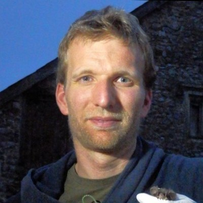
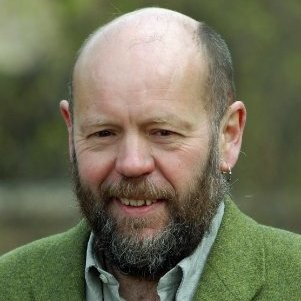
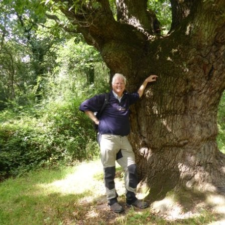

Hello! I am Emma Underwood. My pronouns are she/her.
Most would describe me as a map-maker and passionate environmentalist. My particular niche of geospatial skills place me at the intersection of ecology, spatial analysis, and conservation. I am developing skills as a spatial ecologist, with a keen interest in ecological modelling. My current research focus is in disentangling the local and global change drivers leading plants to shift their ranges in time and space.
Designed and delivered an introductory GIS lecture and a practical/demo class to Masters level students within the Conservation of Forest Biology (ConFoBi) Research Training Group Masters course.
September 2017 - November 2019
University of the West of England
GIS Instructor, Environmental Technician
Delivered practical classes to Level 2 & 3 students studying on BSc Environmental Science, BSc Wildlife Ecology and Conservation Science and BSc Integrated Wildlife and Conservation (Bristol Zoo) courses. I liasised and advised with academic staff across the Department of Applied Science on module design and delivery to seamlessly integrate GIS learning. Supported data collection on UK and international field work. Managed the maintenance and monitoring of the state-of-the-art glasshouse used for research and teaching.
September 2013 - September 2017
Ecotricity
GIS Specialist
Technical support to the planning and development team at the worlds first green energy company. Other internal roles included: Academy trainer, Community Liaison and IS09001 Quality Manager.
March 2013 - September 2017
Local Government (B&NES)
GIS Technician
Technical support to the GIS team at Bath and North East Somerset Council (B&NES).
Education
2019 - 2020
Master's Degree (MRes)
Master of Applied Science
University of the West of England
Thesis title: "Re-wilding the City: Using Circuitscape as a Tool to Assess the Effectiveness of Urbanscape Conservation Mitigation Strategies". Main skills developed: Predictive Modeling · Research · R (Programming Language).
2018
Postgraduate Certificate
Postgraduate Certificate
Associate Fellow of the Higher Education Academy / University of the West of England
Postgraduate Certificate in Academic Practice (PCAP): Higher Education Theory and Practice (Module 1).
2009 - 2012
Bachelor's Degree (GIS)
Bachelor of Science
Newcastle University
Dissertation title: "Monitoring Continuous Cover Forestry using Remote Sensing and GNSS". Main skills developed: GIS softwares, GPS & GNSS, Remote Sensing, Python, Programming, Photogrammetry, Engineering Maths
References

Dr Paul Lintott
Senior Lecturer
Senior Lecturer at University of the West of England (UWE), former tutor during Masters research.

Dr Simon Pickering
Ecologist
Ecologist (Ecotricity), overseeing all pre-planning permission projects, conducting ecological surveys, liasion with landowners and statutory agencies and acting as a link to the local community and universities.

Visiting Professor (Southampton) / Forestry Commission
Forest expert: Forestry management, conservation, restoration, ancient woodland inventory, wetland establishment, heathland management, funding, and policy.